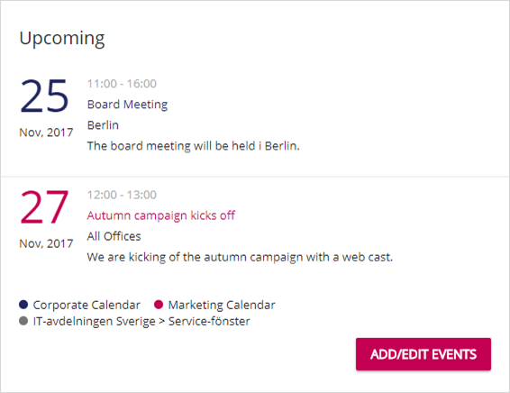
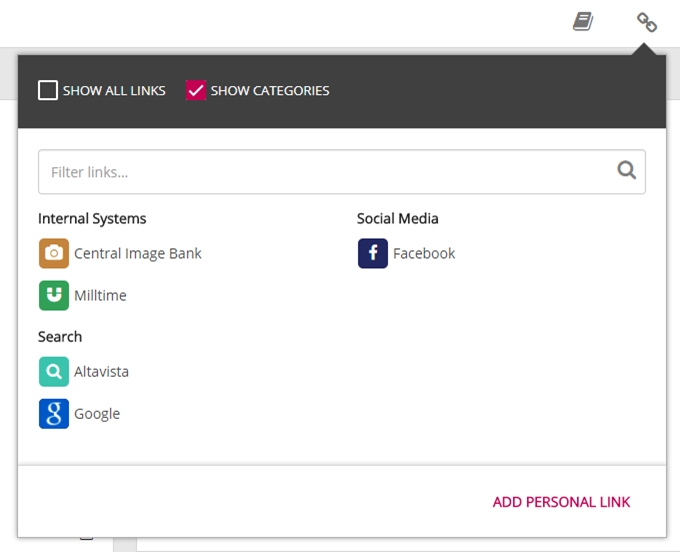
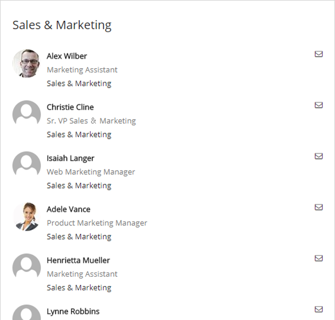
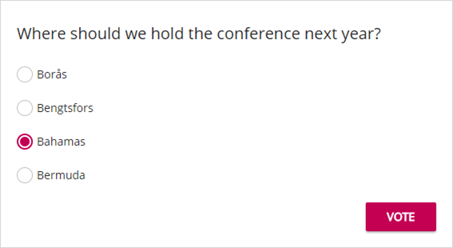
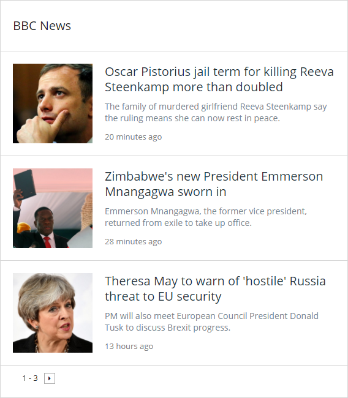
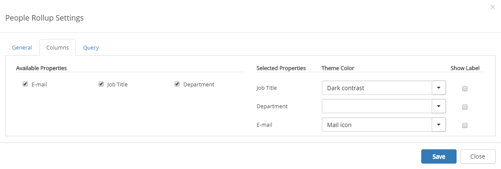

Omnia Intranet - November 2017
Features
Component Design aligned with Color Theme
The following components in Omnia Foundation have a new design based on the new Color Theme.





People Rollup
Possibility to set style on properties in People Rollup. E-mail address can be shown as an icon.

Deprecated
- The Last Visited Links control is deprecated. It is replaced by the possibility to sort links in the My Links control based on time last visited. Note! Any Last Visited Links control already added to a page will still work.
Bug Fixes
- Style issue in My Links control on legacy SharePoint pages.
- Page cannot be found message shows on quick pages (when it takes long time to load) even if the page exists.
- Quick edit icon pushes down the title on the page for users with edit access.
- Problem with mobile navigation when using white background color. The arrow were not shown.
- Can't delete a reusable banner that includes an & character.
- RSS feed crashed when result was not RSS formatted. Now it displays an error message.
- Manage Content link in settings menu was not available for users with only edit access in a sub site.
- Secure page property for edit access did not work for AD security groups.
- Error in page layout if multi lingual feature was turned off.
- Issues having more 4 dynamic levels in the mega menu.
- Most Liked and Most Commented controls showed deleted web pages in the list.
- When adding a really long word in the content editor without any space, the content showed outside the content area.